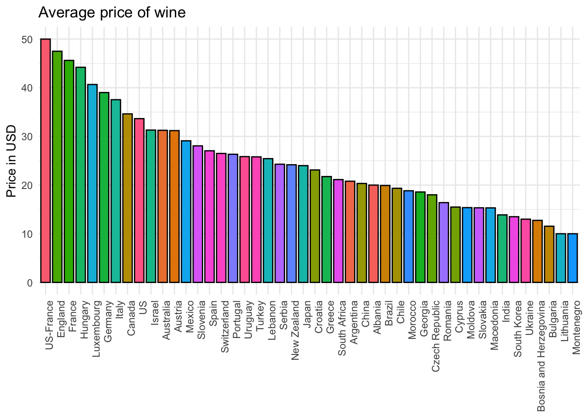
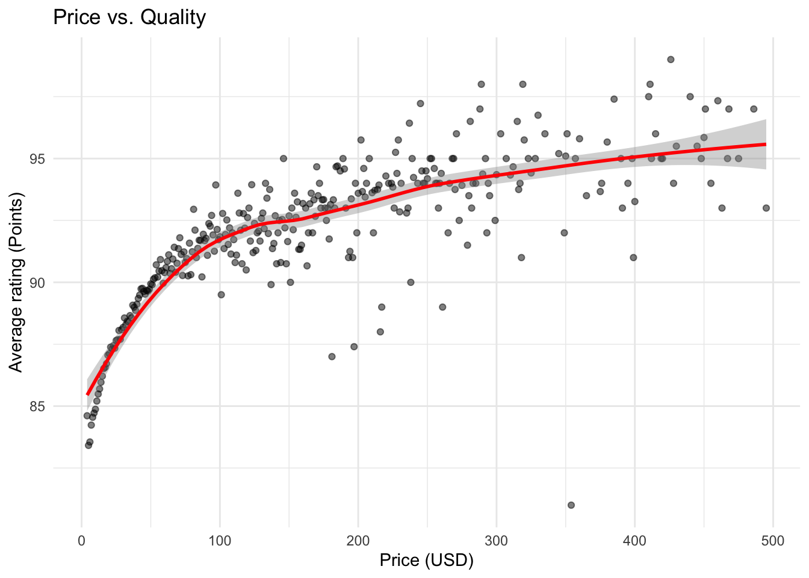
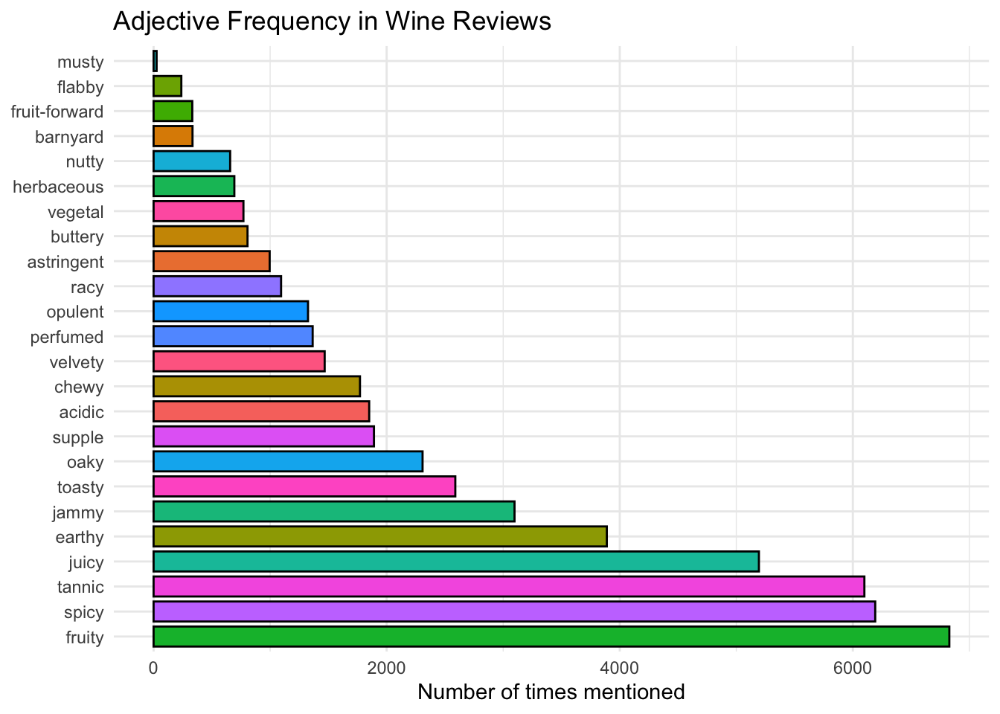
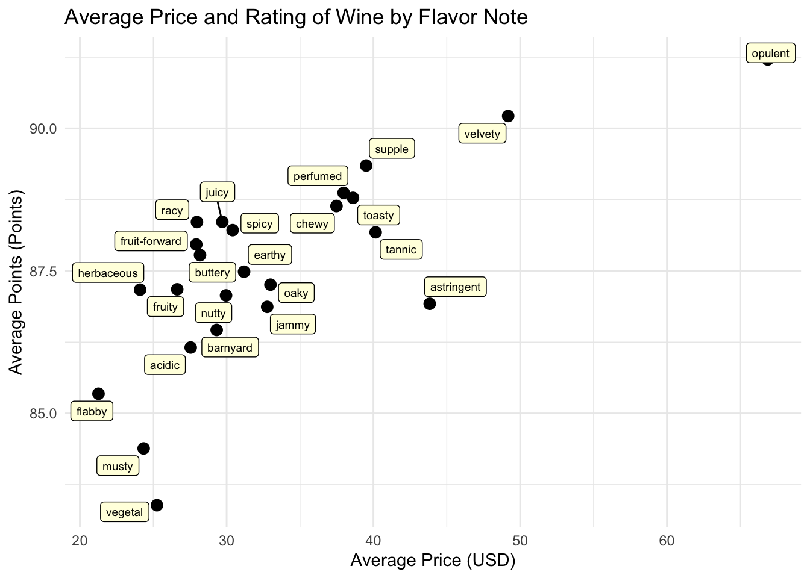
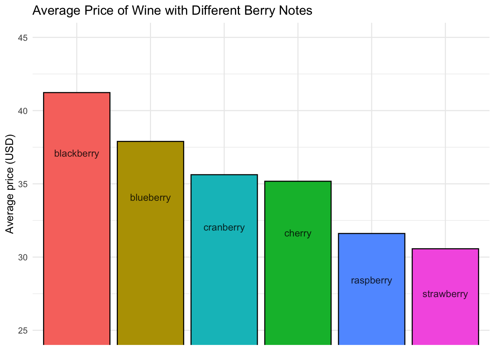

library(tidyverse)
library(ggrepel)
# Load the data
wine_data <- read_csv("data/winemag-data_first150k.csv")Introduction
The world of wine is rich with complexity, offering a diverse range of flavors, prices, and qualities. In this project we will analyze trends in wine characteristics by examining a Kaggle dataset of over 150,000 wine reviews. Through this exploration, we aim to uncover insights about the relationship between price, quality, and the descriptive notes used by wine experts. By analyzing factors such as the average price of wine by country, the correlation between price and ratings, and the impact of specific flavor notes on wine quality, this project seeks to provide a comprehensive view of what influences wine preferences and how they correlate to market values.
Analisys
Import Libraries and Data
The tidyverse package is used for data visualization, while ggrepel adds functionality for labeling text on plots.
Inspect the Dataset
Let’s take a look at the first 10 records.
head(wine_data, n = 10)# A tibble: 10 × 11
...1 country description designation points price province region_1 region_2
<dbl> <chr> <chr> <chr> <dbl> <dbl> <chr> <chr> <chr>
1 0 US This treme… Martha's V… 96 235 Califor… Napa Va… Napa
2 1 Spain Ripe aroma… Carodorum … 96 110 Norther… Toro <NA>
3 2 US Mac Watson… Special Se… 96 90 Califor… Knights… Sonoma
4 3 US This spent… Reserve 96 65 Oregon Willame… Willame…
5 4 France This is th… La Brûlade 95 66 Provence Bandol <NA>
6 5 Spain Deep, dens… Numanthia 95 73 Norther… Toro <NA>
7 6 Spain Slightly g… San Román 95 65 Norther… Toro <NA>
8 7 Spain Lush cedar… Carodorum … 95 110 Norther… Toro <NA>
9 8 US This re-na… Silice 95 65 Oregon Chehale… Willame…
10 9 US The produc… Gap's Crow… 95 60 Califor… Sonoma … Sonoma
# ℹ 2 more variables: variety <chr>, winery <chr>Clean the Data
From inspecting the dataset, it appears that the country variable is of type
# Clean up the data
wine_data <- wine_data |> filter(!(is.na(price) | is.na(country))) |>
mutate(country = as.factor(country)) |>
select(-c(region_1, region_2, winery))Average price by country
One of the first interesting insights would be to determine which countries produce the most expensive and the cheapest wines. To find this out, let’s create a plot showing the average wine prices for each country in the dataset.
wine_data |>
group_by(country) |>
summarize(avr_price = mean(price)) |>
ggplot(aes(fct_reorder(country, avr_price, .desc = TRUE), avr_price,
fill = country)) +
geom_col(color = "black", width = 0.8, show.legend = FALSE) +
labs(
title = "Average price of wine",
x = NULL,
y = "Price in USD"
) +
theme_minimal() +
theme(axis.text.x = element_text(angle = 90, hjust = 1))
The countries that produce the most expensive wines are the US, France, England, Hungary, and Luxembourg, with average prices ranging from 40 to 50 USD. On the other hand, the cheapest wine producers are Montenegro, Lithuania, Bulgaria, Bosnia, and Ukraine, where wines typically cost between 10 and 15 USD.
Correlation between Price and Quality
Another interesting question to explore is the correlation between price and quality. Are more expensive wines actually better than cheaper ones? To find out, let’s visualize the relationship between prices and ratings (points).
wine_data |>
filter(price < 500) |>
group_by(price) |>
summarize(avr_rating = mean(points)) |>
ggplot(aes(price, avr_rating)) +
geom_point(alpha = 0.5) +
geom_smooth(color = "red") +
labs(
title = "Price vs. Quality",
x = "Price (USD)",
y = "Average rating (Points)"
) +
theme_minimal()
There is definitely a correlation between price and rating, with more expensive wines tending to have higher ratings. However, the relationship is stronger in the 0 to 100 USD range, where price significantly impacts quality. Beyond 100 USD, wines are fairly similar in quality, with higher prices offering only a slight improvement.
Flavor notes affect on price and quality
Wine can have a wide variety of flavors, described using different flavor notes. To determine which flavor notes are the most desirable, we identified 24 of the most commonly used adjectives to describe wine flavors. You can find the article with this information here.
First, let’s see if these adjectives are actually used in the wine reviews and which ones are more common than others. We’ll plot the frequency of each adjective mentioned in the description section of the reviews.
# Create a vector with the adjectives
adjectives <- c("Acidic", "Astringent", "Barnyard", "Buttery", "Chewy",
"Earthy", "Flabby", "Fruity", "Fruit-forward",
"Herbaceous", "Jammy", "Juicy", "Musty", "Nutty",
"Oaky", "Opulent", "Perfumed", "Racy", "Spicy",
"Supple", "Tannic", "Toasty", "Vegetal", "Velvety")
# Create a regex pattern to search for adjectives
pattern <- paste0("(?i)", paste(adjectives, collapse = "|"))
# Create a data frame with wine reviews where those adjectives were used
wine_with_adj <- wine_data |>
mutate(
adjective = factor(tolower(str_extract(description, pattern)))
) |>
filter(!is.na(adjective))
# Plot the frequency of each adjective
wine_with_adj |> group_by(adjective) |>
summarise(count = n()) |>
ggplot(aes(count, fct_reorder(adjective, count, .desc = TRUE),
fill = adjective)) +
geom_col(color = "black", width = 0.8, show.legend = FALSE) +
labs(
title = "Adjective Frequency in Wine Reviews",
y = NULL,
x = "Number of times mentioned"
) +
theme_minimal()
We can see that most of these adjectives are widely used among wine experts. “Fruity,” “Spicy,” “Tannic,” and “Juicy” appear in over 5,000 reviews, making them very common. On the other hand, adjectives like “Musty,” “Flabby,” and “Fruit-forward” are relatively rare.
Now that we know wine experts frequently use these words, let’s explore which flavor notes are associated with more sophisticated wines. To visualize this, we’ll plot the average price and rating for each adjective.
# Plot average price and rating depending on a flavor note
wine_with_adj |> group_by(adjective) |>
summarise(avr_price = mean(price), avr_points = mean(points)) |>
ggplot(aes(avr_price, avr_points)) +
geom_point(size = 3) +
geom_label_repel(aes(label = adjective),
size = 2.5, color = "black", fill = "lightyellow",
label.size = 0.25, label.padding = 0.25,
box.padding = 0.25) +
labs(
title = "Average Price and Rating of Wine by Flavor Note",
x = "Average Price (USD)",
y = "Average Points (Points)"
) +
theme_minimal()
The clear winner among the flavor notes is “opulent,” which is often associated with the most sophisticated wines. Opulent wines not only have the highest prices but also receive the best ratings. Close contenders are “velvety” and “astringent.” Both velvety and astringent wines are also quite expensive, with velvety wines having higher ratings. In contrast, the cheapest and lowest-quality wines are described as “musty,” “flabby,” and “vegetal.”
Berry notes
While reviewing the descriptions, we noticed that wine is often described as having various berry flavor notes. Let’s conduct a similar analysis to determine which berry flavor is considered the most “expensive.”
The regular expression I used for matching berries is: (?i)\b\w+erry\b.
# A data frame with wines that were described with some berry
berries <- wine_data |>
filter(str_detect(description, "(?i)\\b\\w+erry\\b")) |>
mutate(berry = tolower(str_extract(description, "(?i)\\b\\w+erry\\b")))
# The 6 most used berries used to describe wine (except for just "berry")
topberries <- berries |> group_by(berry) |>
summarize(count = n()) |>
arrange(desc(count)) |>
filter(berry != "berry") |>
slice_head(n = 6)
# Plot the price of wine with different berry notes
berries |>
filter(berry %in% topberries$berry) |>
group_by(berry)|>
summarize(avr_price = mean(price)) |>
ggplot(aes(fct_reorder(berry, avr_price, .desc = TRUE), avr_price,
fill = berry)) +
geom_col(color = "black", show.legend = FALSE) +
coord_cartesian(ylim = c(25, 45)) +
labs(
title = "Average Price of Wine with Different Berry Notes",
y = "Average price (USD)",
x = NULL
) +
geom_text(aes(label = berry), color = "black",
position = position_stack(vjust = 0.9),
size = 3.5,
alpha = 0.8) +
theme_minimal() +
theme(axis.text.x = element_blank())
Wines with blackberry flavor tend to be the most expensive, with an average price of around $42. In contrast, strawberry-flavored wines are the cheapest, averaging $32.
Conclusion
This project explored the relationships between wine characteristics, including price, quality, and flavor notes, based on a dataset of over 150,000 wine reviews. By examining the average price of wine by country, we uncovered interesting trends in global wine pricing. We also explored the correlation between price and quality, revealing that while more expensive wines tend to have higher ratings, the relationship is less pronounced at higher price points. Further, our analysis of flavor notes showed that descriptors like “opulent,” “velvety,” and “astringent” are linked to higher-priced and higher-rated wines, while terms like “musty” and “flabby” correlate with lower-quality wines. Additionally, berry flavor notes such as “blackberry” were associated with the most expensive wines. Overall, this exploration provides a comprehensive look at the factors that influence wine preferences and their market value, offering useful insights for both wine enthusiasts and producers.